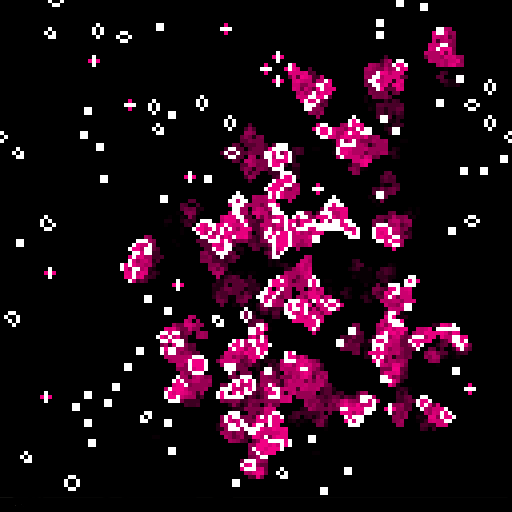

Play
Conway's Game of Life with WebGL
Motivation
I am very interested in simple systems that exhibit complexity, and Conway's Game of Life has some very simple rules. If a living cell has two or three neighbors, it keeps on living. If a dead cell has three neighbors, it becomes alive. The rules are that simple, yet its world is capable of great complexity.
The GPU is a wonderful resource for performing parallel tasks, and Life is very parallel. Every cell is changed at once in parallel based on how many neighboring cells it has. I set out to use the GPU to implement the Game of Life
I first implemented it using OpenCL on Mac OS X. I thought OpenCL would be cross platform enough. However, I was disappointed by the runtimes available on Windows and Linux. The skeleton code required for each platform was different. Some runtimes only ran code on the CPU and not the GPU, and some not on their creator's competitor's GPUs. I got fed up with the mess and decided not to publish anything.
Then, a few weeks ago, I heard about WebCL. It sounded nice, but it unfortunately isn't very well supported in browsers, currently. It requires plugins from Nokia or Samsung. Nokia's plugin only works with Firefox and Samsung's only works with Safari. Again, I was disappointed.
I had just seen a cool, interactive infographic that displays global small arms imports and exports when I thought that I could do Life in WebGL. I did some learning and found WebGL to be very well suited for what I wanted to make: it provides access to the GPU in a platform agnostic way.</a>
I grabbed a WebGL example from mr.doob. Thank you, mr.doob. His example contained a bit of boilerplate to get me started. I then set out to write my first GLSL compute shader.
How it Works
Here's how it works. mr.doob's example is of a single texture on a single quad. We would like to do some computation before rendering, though. We create two textures for use as frame buffers (so we can render to them). We also need a new fragment shader to perform the computation. This shader will alternatively read from one, previous state, texture (to count neighbors of all the cells) and write to the other, current state, texture; the game world is double buffered. Our rendering fragment shader will take whatever texture is ready and sample it in order to generate pretty pictures.
How to Play
How you play is up to you. I've given you the game world and a 2x2 mouse cursor. You can draw stuff in the box. That is all. Enjoy!
I've also given you the source code, so you can hack around with it and make something interesting. Use it for whatever you want, but be nice.